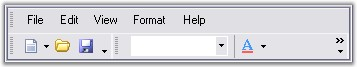
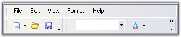
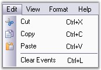
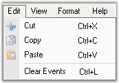
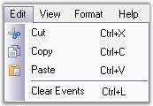
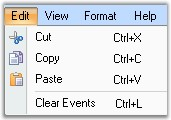
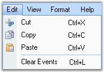
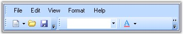

The Visual appearance of the menus can be defined by using various Visual Styles and Themes.
Themes define the look and feel of the whole menu and it also changes the behavior of the menu. Themes can be enabled by setting ThemesEnabled property of mainFrameBarManager to true.

Figure 832: No Themes

Figure 833: XP Theme
Supported GUI styles
The supported Visual styles are:
· Office 2003 look: This can enabled by setting Style to Office2003.

Figure 834: Office 2003 Visual Style
· OfficeXP look: This can enabled by setting Style to OfficeXP.

Figure 835: Office XP Visual style
· VS2005 look: This can enabled by setting Style to VS2005.

Figure 836: VS 2005 Visual Style
· Office 2007 look: This can enabled by setting Style to Office2007.

Figure 837: Office 2007 Visual Style
· Office 2007 Outlook: This can enabled by setting Style to Office2007Outlook.

Figure 838: Office 2007 Outlook Visual Style
|
[C#]
this.mainFrameBarManager1.Style = VisualStyle.Office2003; |
|
[VB.NET]
Me.mainFrameBarManager1.Style = VisualStyle.Office2003 |
Office 2007 Themes
You can also specify the color schemes for Office 2007 visual styles. They can be blue, silver and black.
 Note: The property ThemesEnabled must be set to
true and the property Style must be set to either Office2007 or
Office2007Outlook.
Note: The property ThemesEnabled must be set to
true and the property Style must be set to either Office2007 or
Office2007Outlook.
|
[C#]
this.mainFrameBarManager1.Style = VisualStyle.Office2007; this.mainFrameBarManager1.Office2007Theme = Office2007ColorScheme.Blue; |
|
[VB.NET]
Me.mainFrameBarManager1.Style = VisualStyle.Office2007 Me.mainFrameBarManager1.Office2007Theme = Office2007ColorScheme.Blue |

Figure 839: Office 2007 Blue Theme
Figure 840: Office 2007 Silver Theme
Figure 841: Office 2007 Black Theme
Custom Colors
We can also apply custom colors to the MainFrameBarManager by setting Office2007Theme to "Managed" and specifying the custom color through the ApplyManagedColors method as follows.
|
[C#]
this.mainFrameBarManager1.Office2007Theme = Syncfusion.Windows.Forms.Office2007Theme.Managed; Office2007Colors.ApplyManagedColors(this, Color.Crimson); |
|
[VB.NET]
Me.mainFrameBarManager1.Office2007Theme = Syncfusion.Windows.Forms.Office2007Theme.Managed; Office2007Colors.ApplyManagedColors(Me, Color.Crimson) |

Figure 842: Custom Color = "Crimson"